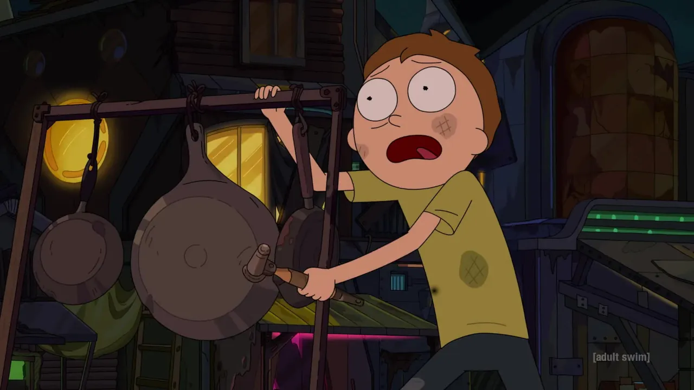
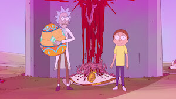
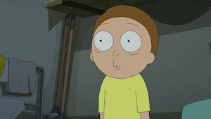
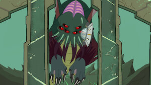
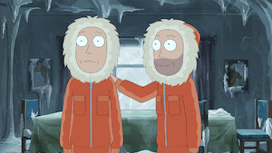
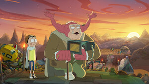

EXPLORAR TEMPORADAS
Como punição por desobedecerem, Rick coloca Morty e Summer dentro de uma simulação extrema, mas a experiência começa a afetar suas personalidades no mundo real.
Space Beth pede ajuda a Rick para investigar o assassinato da Rainha Gromflomite, iniciando uma conspiração política intergaláctica cheia de traições.
Enquanto vasculham destroços espaciais, Rick e Morty descobrem segredos envolvendo a nova Cidadela reconstruída e seus misteriosos líderes.

Jerry se transforma acidentalmente em um coelho da Páscoa, levando Rick e Morty a descobrirem a origem sombria e alienígena do feriado.
Após um roubo espacial fracassado, Rick e Morty precisam se infiltrar em uma nave criogênica fingindo ser alienígenas para escapar das consequências.

Beth e Space Beth voltam à infância após um experimento dar errado, obrigando Rick a lidar com versões ainda mais caóticas de suas próprias filhas.

Insatisfeitos com uma franquia cinematográfica interdimensional, Rick e Morty tentam reescrever a própria história do universo do entretenimento.

Jerry faz amizade com outra versão de si mesmo, mas a relação rapidamente se torna perigosa quando dimensões alternativas começam a colidir.

Morty tenta ajudar Morty Jr. a encontrar paz antes do fim, enquanto Rick e Summer enfrentam uma experiência gastronômica tão ruim que se torna uma missão de sobrevivência.
Rick descobre que Memory Rick está preso dentro da mente de Jerry, levando Rick e Beth a uma jornada mental cheia de lembranças perigosas e segredos esquecidos.